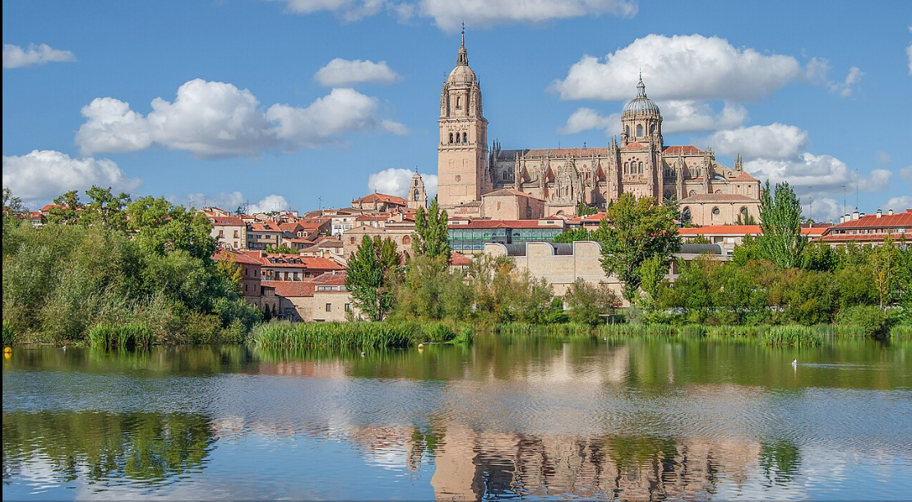

Gastronomía de Salamanca
Ciudad española, capital de la provincia homónima, situada en la comunidad autónoma de Castilla y León. Está ubicada en la comarca del Campo de Salamanca, en plena meseta Norte, en el cuadrante noroeste de la península ibérica.
En este portal aportaremos para conocer un poco más de Salamanca su Gastronomia, ProductosTipicos, platos típicos, y restaurantes, bares de la Ciudad

Destacamos Productos típicos
En Categoria se hace una presentación y listado de productos típicos de Salamanca y en está página se puede ver al detalle algunos de ellos, con la receta con la receta correspondiente.
Platos tipicos
En Categoria2 se hace una presentación y listado de platos típicos de Salamanca y en está página se puede ver al detalle algunos de ellos, con la receta correspondiente
Bares y Restaurantes
Guía de bares, restaurantes y cafés más destacados de la ciudad